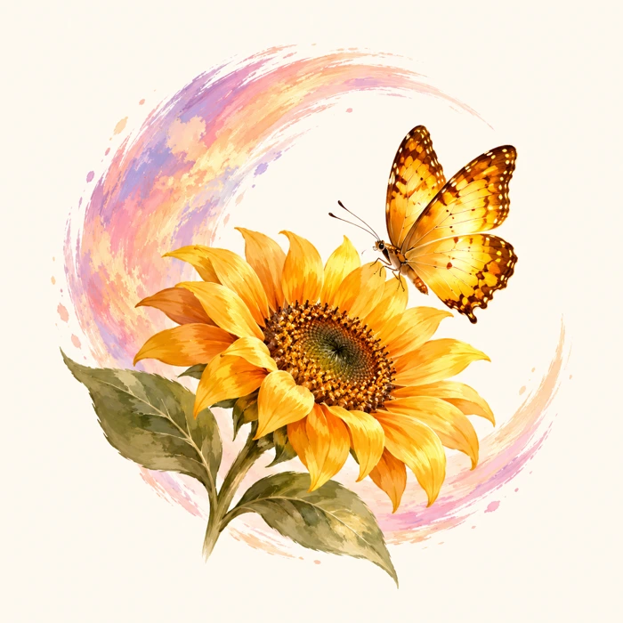

Notice
What caught your attention? A kind word, a little beauty, a moment of care?
A little wonder. A little gratitude. Every day.
Name the blessing. Remember the details.
Make room for gratitude—even in difficult seasons.
A gentle place to begin
You don’t need the perfect words or a perfectly lovely day.
Start with something real. A sentence can be enough.
What caught your attention? A kind word, a little beauty, a moment of care?
What blessing do you recognize in that detail? Give it a name you’ll remember.
Write it down, sketch it, or reflect on a Scripture read in context.
Offer thanks, pray honestly, or encourage someone. Return to the memory later.
There is room here for grief, questions, and prayers still unanswered. Noticing goodness doesn’t require a cheerful ending.
Today’s loveliest thought
A friend checking in. A meal someone brought. A quiet moment you didn’t expect.
Sometimes giving a blessing a name helps us remember what it meant.
Notice the moment.
Name the blessing.
Keep a little record.
Your words stay in this page while it is open. They are not sent anywhere. Download a copy to keep them.
A moment worth keeping

Our heart
Today’s Loveliest Thought began with a question: could this small moment be today’s loveliest thought?
Our hope is to approach life with eyes, mind, and heart open to God’s goodness. To notice the tender mercies we might otherwise hurry past. To name them, remember them, and respond with gratitude.
Faith is at the center. Journaling, creativity, nature, and everyday beauty give us ways to express it.
A blessing doesn’t have to be big to be worth remembering.
Thoughtful tools for the practice
Begin with a free seven-day printable, and continue at your own pace.
Available now · Free printable
A gentle introduction to Notice, Name, Remember, and Respond. Space for small blessings, honest prayers, and a look back at the week.
A first step into noticing and naming.
Get the free seven-day journal (opens in a new tab)Opens the signup form in a new tab. Your download is available immediately after signup.
The form collects your name, email, and consent for the messages you request. Your reflections and prayers stay private in this page.
Planned · 30-day digital journal
Daily invitations, Scripture reflections, creative exercises, and weekly remembrance pages—designed for ordinary and difficult days.
A longer practice of remembering.
Details and availability will be shared when the journal is ready.